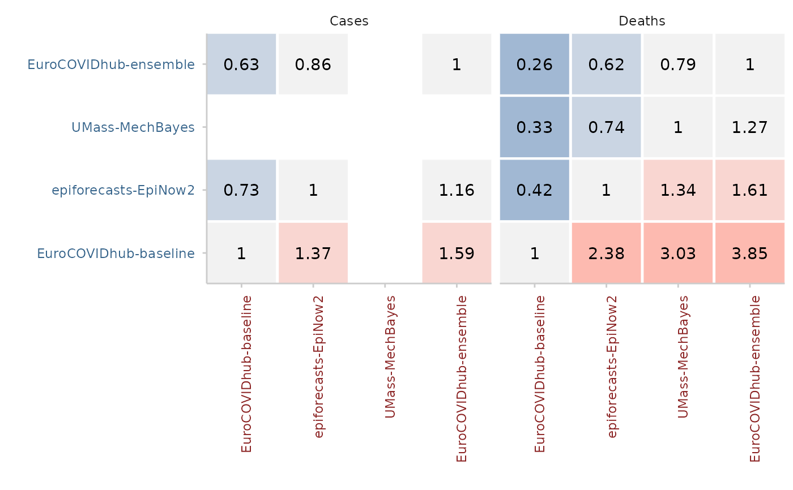

Obtain pairwise comparisons between models
Source:R/pairwise-comparisons.R
get_pairwise_comparisons.RdCompare scores obtained by different models in a pairwise tournament. All combinations of two models are compared against each other based on the overlapping set of available forecasts common to both models.
The input should be a scores object as produced by score(). Note that
adding additional unrelated columns can unpredictably change results, as
all present columns are taken into account when determining the set of
overlapping forecasts between two models.
The output of the pairwise comparisons is a set of mean score ratios, relative skill scores and p-values.
The following illustrates the pairwise comparison process:
Mean score ratios
For every pair of two models, a mean score ratio is computed. This is simply the mean score of the first model divided by the mean score of the second. Mean score ratios are computed based on the set of overlapping forecasts between the two models. That means that only scores for those targets are taken into account for which both models have submitted a forecast.
(Scaled) Relative skill scores
The relative score of a model is the geometric mean of all mean score ratios which involve that model. If a baseline is provided, scaled relative skill scores will be calculated as well. Scaled relative skill scores are simply the relative skill score of a model divided by the relative skill score of the baseline model.
p-values
In addition, the function computes p-values for the comparison between two
models (again based on the set of overlapping forecasts). P-values can be
computed in two ways: based on a nonparametric Wilcoxon signed-rank test
(internally using wilcox.test() with paired = TRUE) or based on a
permutation test. The permutation test is based on the difference in mean
scores between two models. The default null hypothesis is that the mean score
difference is zero (see permutation_test()).
Adjusted p-values are computed by calling p.adjust() on the raw p-values.
The code for the pairwise comparisons is inspired by an implementation by
Johannes Bracher.
The implementation of the permutation test follows the function
permutationTest from the surveillance package by Michael Höhle,
Andrea Riebler and Michaela Paul.
Arguments
- scores
An object of class
scores(a data.table with scores and an additional attributemetricsas produced byscore()).- by
Character vector with column names that define the grouping level for the pairwise comparisons. By default (
model), there will be one relative skill score per model. If, for example,by = c("model", "location"). Then you will get a separate relative skill score for every model in every location. Internally, the data.table with scores will be split accordingby(removing "model" before splitting) and the pairwise comparisons will be computed separately for the split data.tables.- metric
A string with the name of the metric for which a relative skill shall be computed. By default this is either "crps", "wis" or "brier_score" if any of these are available.
- baseline
A string with the name of a model. If a baseline is given, then a scaled relative skill with respect to the baseline will be returned. By default (
NULL), relative skill will not be scaled with respect to a baseline model.- ...
Additional arguments for the comparison between two models. See
compare_two_models()for more information.
Value
A data.table with the results of pairwise comparisons
containing the mean score ratios (mean_scores_ratio),
unadjusted (pval) and adjusted (adj_pval) p-values, and relative skill
values of each model (..._relative_skill). If a baseline model is given
then the scaled relative skill is reported as well
(..._scaled_relative_skill).
Examples
scores <- score(as_forecast_quantile(example_quantile))
#> ℹ Some rows containing NA values may be removed. This is fine if not
#> unexpected.
pairwise <- get_pairwise_comparisons(scores, by = "target_type")
pairwise2 <- get_pairwise_comparisons(
scores, by = "target_type", baseline = "EuroCOVIDhub-baseline"
)
library(ggplot2)
plot_pairwise_comparisons(pairwise, type = "mean_scores_ratio") +
facet_wrap(~target_type)
